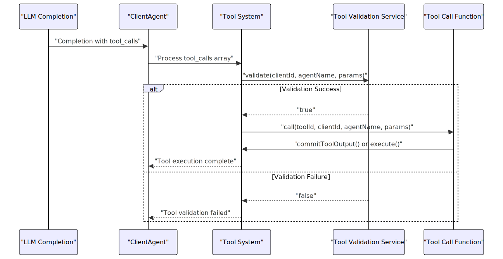

This document covers how to create, register, and integrate tools within the agent-swarm-kit framework. Tools are external functions that agents can invoke to perform specific actions, from simple computations to complex navigation between agents. For information about agent lifecycle and execution patterns, see Building Multi-Agent Systems. For state management during tool execution, see Managing State and Storage.
Tools in the agent swarm system follow a structured pattern where they are registered globally, validated before execution, and integrated with agents through schema definitions. The system supports both simple functional tools and complex navigation tools that orchestrate agent transitions.

All tools follow a standardized interface that includes identification, execution logic, validation, and OpenAI-compatible function schemas for LLM integration.
| Property | Type | Description |
|---|---|---|
toolName |
ToolName |
Unique identifier for the tool |
call |
async function |
Main execution function |
validate |
async function |
Pre-execution validation |
type |
"function" |
Tool type specification |
function |
object |
OpenAI function schema |
const EXAMPLE_TOOL = addTool({
toolName: "example-tool",
call: async ({ toolId, clientId, agentName, params }) => {
// Tool execution logic
await commitToolOutput(toolId, "Tool executed successfully", clientId, agentName);
},
validate: async ({ clientId, agentName, params }) => {
// Validation logic
return true;
},
type: "function",
function: {
name: "example-tool",
description: "Example tool for demonstration",
parameters: {
type: "object",
properties: {
input: {
type: "string",
description: "Input parameter"
}
},
required: ["input"]
}
}
})
The tool execution process involves validation, execution, and output handling within the context of agent conversations and LLM completions.

Navigation tools are specialized tools that manage transitions between agents within a swarm. The system provides templates for creating both agent-specific navigation and triage navigation patterns.
The createNavigateToAgent template creates tools that navigate from any agent to a specific target agent:
const navigateToSales = createNavigateToAgent({
toolOutput: (clientId, lastAgent, agentName) =>
`Successfully navigated from ${lastAgent} to ${agentName}`,
executeMessage: (clientId, lastMessage, lastAgent, agentName) =>
`Processing ${lastMessage} for ${clientId} on ${agentName}`,
beforeNavigate: async (clientId, lastMessage, lastAgent, agentName) => {
// Pre-navigation logic
}
});
The createNavigateToTriageAgent template handles navigation back to the default/triage agent:
const navigateToTriage = createNavigateToTriageAgent({
toolOutputAccept: (clientId, defaultAgent) =>
`Successfully navigated to ${defaultAgent}`,
toolOutputReject: (clientId, defaultAgent) =>
`Already on ${defaultAgent}. No navigation needed`,
executeMessage: (clientId, defaultAgent) =>
`Continue conversation based on the last message`
});
The framework provides high-level aliases that combine tool creation with navigation logic, simplifying the process of adding navigation capabilities to agents.
const SALES_NAVIGATION_TOOL = addAgentNavigation({
toolName: "navigate-to-sales",
description: "Navigate to the sales agent for sales-related queries",
navigateTo: "sales-agent",
toolOutput: "Navigated to sales department",
executeMessage: "Hello! I'm here to help with your sales inquiry."
});
const TRIAGE_NAVIGATION_TOOL = addTriageNavigation({
toolName: "navigate-to-triage",
description: "Navigate back to triage for topic change",
flushMessage: "Let me redirect you to our main assistant",
toolOutputAccept: "Redirected to main assistant"
});

The validation system ensures tools can execute safely within the current session context before actual execution occurs.
Tools implement validation through the validate function that receives session context:
validate: async ({ clientId, agentName, params }) => {
// Check session state
const currentAgent = await getAgentName(clientId);
if (currentAgent !== agentName) {
return false; // Tool called on inactive agent
}
// Validate parameters
if (!params.requiredField) {
return false;
}
return true;
}
The system includes rescue mechanisms for tool execution failures:
| Strategy | Trigger | Behavior |
|---|---|---|
flush |
Tool validation fails | Clear conversation and emit placeholder |
flush |
Tool not found | Clear conversation and retry |
flush |
Empty tool output | Clear conversation and emit rescue message |
Tools integrate with agents through the completion system, where LLMs generate tool_calls arrays that trigger tool execution.

LLM responses containing tool calls follow this structure:
{
"role": "assistant",
"content": "",
"tool_calls": [
{
"function": {
"name": "navigate-to-sales",
"arguments": {
"query": "pricing information"
}
}
}
]
}
The system includes safeguards against multiple tool calls within navigation execution:
call: async ({ toolId, clientId, toolCalls }) => {
if (toolCalls.length > 1) {
console.error("agent-swarm addAgentNavigation model called multiple tools within navigation execution");
}
await navigate(toolId, clientId, navigateTo);
}
Tool templates use beginContext() to ensure clean execution scope:
return beginContext(async (toolId: string, clientId: string, agentName: AgentName) => {
// Tool execution in isolated context
await commitStopToolsForce(clientId);
await changeToAgent(agentName, clientId);
await executeForce(message, clientId);
});
Tools interact with session state through specialized commit functions:
| Function | Purpose |
|---|---|
commitToolOutput() |
Commit tool result to conversation |
commitStopToolsForce() |
Stop pending tool executions |
commitFlushForce() |
Clear conversation history |
execute() |
Continue agent conversation |
emitForce() |
Send message without history |